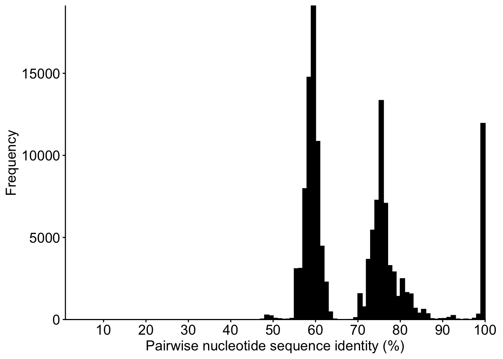
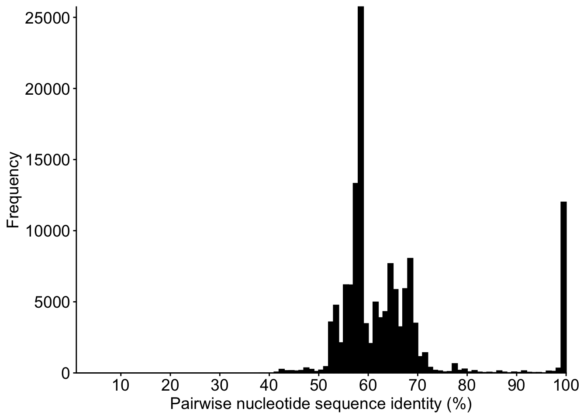
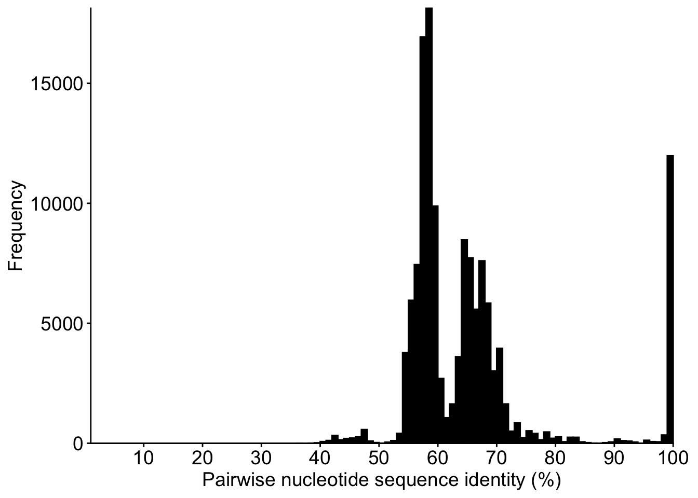
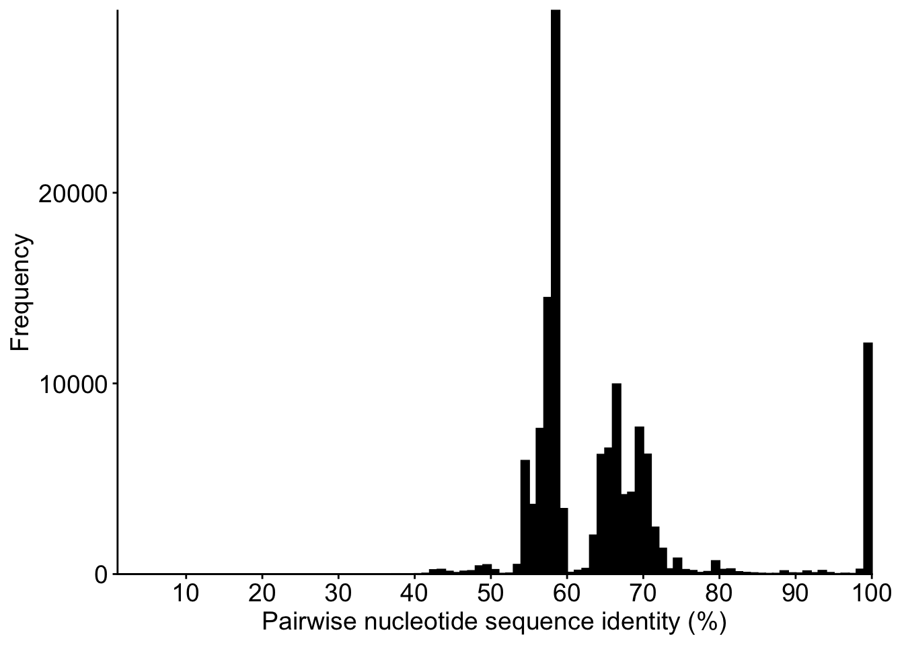
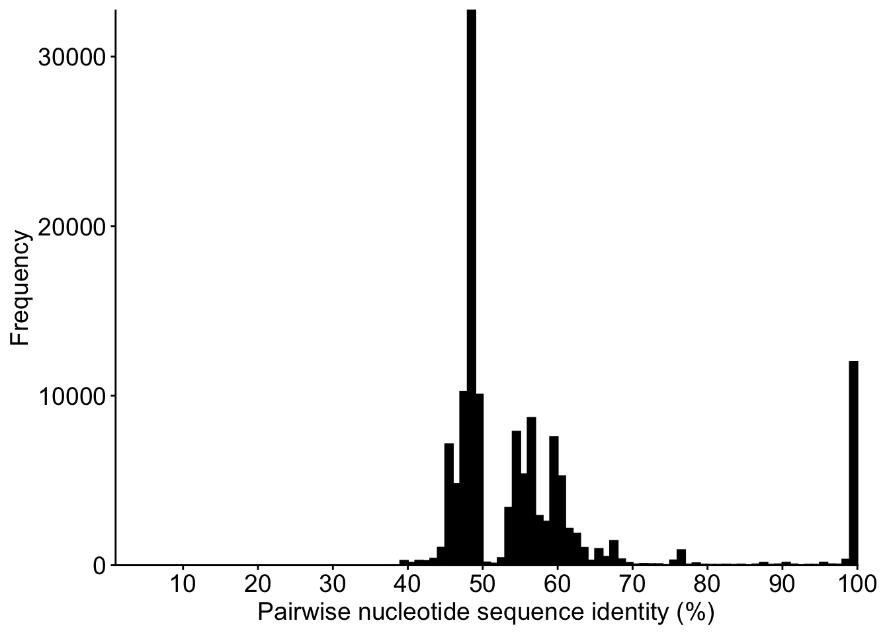

library(ggplot2)
options(stringsAsFactors = FALSE)Pairwise nucleotide sequence identity distributions in Baculoviridae
Note
This report was generated using AI under general human direction. At the time of generation, the contents have not been comprehensively reviewed by a human analyst.
Introduction
Pairwise nucleotide sequence identity distributions provide a descriptive view of genetic diversity among the selected Baculovirus genomes. They are useful for characterising the similarity structure of individual markers and concatenated loci before later analyses of species demarcation. This report deliberately makes no taxonomic threshold proposal and does not calculate K2P distances.
Input datasets
This analysis uses only the alignments and sequence-selection audit produced by 02_sequence_alignment.qmd. The existing alignments are read without modification and no new MAFFT alignment is performed. The three individual marker alignments are read from results/alignments/three_genes/individual/; the concatenated marker and 38-core-gene alignments are read from their respective concatenated/ directories.
alignment_root <- file.path("results", "alignments")
three_individual_dir <- file.path(alignment_root, "three_genes", "individual")
three_concatenated_dir <- file.path(alignment_root, "three_genes", "concatenated")
core_concatenated_dir <- file.path(alignment_root, "core_genes", "concatenated")
output_dir <- file.path("results", "pairwise_sequence_identity")
figure_dir <- file.path(output_dir, "figures")
required_files <- c(
file.path(alignment_root, "alignment_statistics.tsv"),
file.path(alignment_root, "reference_sequence_selection.tsv"),
file.path(three_concatenated_dir, "three_genes.fna"),
file.path(three_concatenated_dir, "partitions.tsv"),
file.path(core_concatenated_dir, "core_38.fna")
)
missing_files <- required_files[!file.exists(required_files)]
if (length(missing_files) > 0L) stop("Required step-02 files are missing:\n", paste(missing_files, collapse = "\n"), call. = FALSE)
read_tsv <- function(path) read.delim(path, sep = "\t", quote = "", na.strings = "", check.names = FALSE, stringsAsFactors = FALSE)
alignment_statistics <- read_tsv(file.path(alignment_root, "alignment_statistics.tsv"))
selection <- read_tsv(file.path(alignment_root, "reference_sequence_selection.tsv"))
three_partitions <- read_tsv(file.path(three_concatenated_dir, "partitions.tsv"))
required_statistics_columns <- c("dataset", "gene", "alignment_file", "alignment_length")
required_selection_columns <- c("dataset", "gene", "genome_group_id", "selected_accession")
if (length(setdiff(required_statistics_columns, names(alignment_statistics))) > 0L) stop("alignment_statistics.tsv lacks required columns.", call. = FALSE)
if (length(setdiff(required_selection_columns, names(selection))) > 0L) stop("reference_sequence_selection.tsv lacks required columns.", call. = FALSE)
if (length(setdiff(c("gene", "source_alignment", "start", "end", "alignment_length"), names(three_partitions))) > 0L) stop("Three-gene partition table lacks required columns.", call. = FALSE)
dir.create(output_dir, recursive = TRUE, showWarnings = FALSE)
dir.create(figure_dir, recursive = TRUE, showWarnings = FALSE)
old_generated_figures <- file.path(
figure_dir,
c(
"four_panel_pairwise_identity.png", "four_panel_pairwise_identity.pdf",
paste0(c("polh_gran", "lef8", "lef9", "three_genes"), "_pairwise_identity.pdf")
)
)
unlink(old_generated_figures[file.exists(old_generated_figures)], force = TRUE)read_fasta <- function(path) {
lines <- readLines(path, warn = FALSE)
header_rows <- which(startsWith(lines, ">"))
if (length(header_rows) == 0L || header_rows[1] != 1L) stop("Invalid FASTA file: ", path, call. = FALSE)
records <- lapply(seq_along(header_rows), function(i) {
start <- header_rows[i] + 1L
end <- if (i < length(header_rows)) header_rows[i + 1L] - 1L else length(lines)
sequence <- paste(lines[start:end][nzchar(trimws(lines[start:end]))], collapse = "")
if (!nzchar(sequence)) stop("Empty FASTA sequence in ", path, call. = FALSE)
list(header = substring(lines[header_rows[i]], 2L), sequence = sequence)
})
headers <- vapply(records, `[[`, character(1), "header")
if (anyDuplicated(headers)) stop("Duplicate FASTA headers in ", path, call. = FALSE)
records
}
three_concat <- read_fasta(file.path(three_concatenated_dir, "three_genes.fna"))
three_ids <- vapply(three_concat, `[[`, character(1), "header")
if (anyDuplicated(three_ids)) stop("The concatenated alignment contains duplicate genome_group_id headers.", call. = FALSE)
three_sequences <- vapply(three_concat, `[[`, character(1), "sequence")
three_length <- nchar(three_sequences)
if (length(unique(three_length)) != 1L) stop("Concatenated sequences do not have a common length.", call. = FALSE)
selected_three <- selection[selection$dataset == "three_genes", , drop = FALSE]
if (anyDuplicated(paste(selected_three$genome_group_id, selected_three$gene, sep = "\r"))) {
stop("Step-02 contains duplicate three-gene sequence selections for a genome group and gene.", call. = FALSE)
}
if (!all(selected_three$genome_group_id %in% three_ids)) stop("A selected genome_group_id is absent from the concatenated alignment.", call. = FALSE)
if (!all(three_ids %in% unique(selected_three$genome_group_id))) stop("The concatenated alignment contains a genome group absent from the step-02 selection.", call. = FALSE)
expected_genes <- c("polh_gran", "lef8", "lef9")
if (!setequal(three_partitions$gene, expected_genes) || nrow(three_partitions) != 3L) stop("Unexpected three-gene partition set.", call. = FALSE)
three_partitions <- three_partitions[match(expected_genes, three_partitions$gene), , drop = FALSE]
if (any(three_partitions$start != c(1L, head(three_partitions$end, -1L) + 1L)) || three_partitions$end[3] != unique(three_length)) stop("Three-gene partitions are not contiguous or do not span the alignment.", call. = FALSE)
core_concat <- read_fasta(file.path(core_concatenated_dir, "core_38.fna"))
core_ids <- vapply(core_concat, `[[`, character(1), "header")
if (anyDuplicated(core_ids) || length(core_ids) != 520L) stop("The 38-core-gene concatenation must contain 520 unique genome_group_id headers.", call. = FALSE)
core_sequences <- vapply(core_concat, `[[`, character(1), "sequence")
core_length <- nchar(core_sequences)
if (length(unique(core_length)) != 1L) stop("38-core-gene concatenated sequences do not have a common length.", call. = FALSE)
if (!setequal(core_ids, three_ids)) stop("The 38-core-gene and three-gene concatenations do not contain the same genome groups.", call. = FALSE)Sequence selection
The three-gene concatenation already contains exactly one selected sequence per eligible genome_group_id, including the CuniNPV exception. For the individual genes, the selection audit from step 02 is used to map each selected accession to the corresponding accession header in the individual alignment. Thus, alternative reference sequences retained in the individual alignments are excluded from the pairwise comparisons.
individual_paths <- setNames(
alignment_statistics$alignment_file[alignment_statistics$dataset == "three_genes"],
alignment_statistics$gene[alignment_statistics$dataset == "three_genes"]
)
if (!all(file.exists(individual_paths))) stop("One or more step-02 three-gene individual alignment files are missing.", call. = FALSE)
selected_individual <- list()
for (gene in expected_genes) {
selected_rows <- selected_three[selected_three$gene == gene, , drop = FALSE]
if (gene == "polh_gran" && any(selected_rows$genome_group_id == "AF403738")) stop("CuniNPV must not have a selected polh/gran sequence.", call. = FALSE)
records <- read_fasta(individual_paths[[gene]])
headers <- vapply(records, `[[`, character(1), "header")
if (anyDuplicated(selected_rows$selected_accession)) stop("Duplicate selected accessions for ", gene, call. = FALSE)
if (!all(selected_rows$selected_accession %in% headers)) stop("A selected accession is absent from the individual alignment for ", gene, call. = FALSE)
selected_records <- records[match(selected_rows$selected_accession, headers)]
selected_ids <- selected_rows$genome_group_id
names(selected_records) <- selected_ids
selected_individual[[gene]] <- selected_records
}
individual_counts <- vapply(selected_individual, length, integer(1))
if (!identical(as.integer(individual_counts[c("lef8", "lef9")]), c(520L, 520L)) || individual_counts[["polh_gran"]] != 519L) {
stop("Selected individual-gene sequence counts do not match the step-02 three-gene dataset.", call. = FALSE)
}
if (!all("AF403738" %in% names(selected_individual[["lef8"]])) || !all("AF403738" %in% names(selected_individual[["lef9"]]))) stop("CuniNPV is missing from lef-8 or lef-9.", call. = FALSE)Pairwise nucleotide identity calculation
For every unordered genome pair, identity is calculated by pairwise deletion. Only positions at which both sequences contain one of A, C, G, or T contribute to the denominator. Gaps, ambiguous nucleotides, and other symbols are excluded. The calculation uses nucleotide indicator matrices and matrix multiplication, avoiding repeated per-pair parsing of the same alignment columns.
pairwise_identity <- function(sequences, genome_ids, dataset, alignment_length) {
if (length(sequences) != length(genome_ids) || anyDuplicated(genome_ids)) stop("Invalid genome identifiers for ", dataset, call. = FALSE)
n <- length(sequences)
if (n < 2L) stop("At least two sequences are required for ", dataset, call. = FALSE)
sequence_lengths <- nchar(sequences)
if (length(unique(sequence_lengths)) != 1L) stop("Sequences have different lengths for ", dataset, call. = FALSE)
if (unique(sequence_lengths) != alignment_length) stop("Observed alignment length disagrees with step-02 metadata for ", dataset, call. = FALSE)
raw_matrix <- matrix(
unlist(lapply(toupper(sequences), charToRaw), use.names = FALSE),
nrow = n,
byrow = TRUE
)
nucleotide_codes <- as.raw(charToRaw("ACGT"))
valid <- raw_matrix == nucleotide_codes[1] |
raw_matrix == nucleotide_codes[2] |
raw_matrix == nucleotide_codes[3] |
raw_matrix == nucleotide_codes[4]
compared_matrix <- tcrossprod(valid * 1L)
identical_matrix <- matrix(0L, nrow = n, ncol = n)
for (base in nucleotide_codes) {
indicator <- (raw_matrix == base) * 1L
identical_matrix <- identical_matrix + tcrossprod(indicator)
}
pair_indices <- which(upper.tri(compared_matrix), arr.ind = TRUE)
compared <- compared_matrix[pair_indices]
identical <- identical_matrix[pair_indices]
result <- data.frame(
genome_group_id_1 = genome_ids[pair_indices[, 1]],
genome_group_id_2 = genome_ids[pair_indices[, 2]],
identical_positions = as.integer(identical),
compared_positions = as.integer(compared),
identity_percentage = ifelse(compared > 0, 100 * identical / compared, NA_real_),
compared_fraction = compared / alignment_length,
stringsAsFactors = FALSE
)
result
}
pairwise_results <- list(
polh_gran = pairwise_identity(
vapply(selected_individual[["polh_gran"]], `[[`, character(1), "sequence"),
names(selected_individual[["polh_gran"]]), "polh_gran", three_partitions$alignment_length[1]
),
lef8 = pairwise_identity(
vapply(selected_individual[["lef8"]], `[[`, character(1), "sequence"),
names(selected_individual[["lef8"]]), "lef8", three_partitions$alignment_length[2]
),
lef9 = pairwise_identity(
vapply(selected_individual[["lef9"]], `[[`, character(1), "sequence"),
names(selected_individual[["lef9"]]), "lef9", three_partitions$alignment_length[3]
),
three_genes = pairwise_identity(three_sequences, three_ids, "three_genes", unique(three_length)),
core_38 = pairwise_identity(core_sequences, core_ids, "core_38", unique(core_length))
)Each pairwise table is written in full, including comparisons with no valid shared nucleotide positions. Such comparisons have NA identity values and are excluded from the histograms.
pairwise_paths <- file.path(output_dir, paste0(names(pairwise_results), "_pairwise_identity.tsv"))
for (i in seq_along(pairwise_results)) write.table(pairwise_results[[i]], pairwise_paths[i], sep = "\t", quote = FALSE, row.names = FALSE, na = "")
expected_pair_counts <- vapply(pairwise_results, nrow, integer(1))
expected_counts <- c(
polh_gran = choose(individual_counts[["polh_gran"]], 2),
lef8 = choose(individual_counts[["lef8"]], 2),
lef9 = choose(individual_counts[["lef9"]], 2),
three_genes = choose(length(three_ids), 2),
core_38 = choose(length(core_ids), 2)
)
if (!identical(as.integer(expected_pair_counts[names(expected_counts)]), as.integer(expected_counts))) {
stop("Unexpected number of unordered pairwise comparisons.", call. = FALSE)
}
for (result in pairwise_results) {
if (any(result$genome_group_id_1 == result$genome_group_id_2) || anyDuplicated(paste(result$genome_group_id_1, result$genome_group_id_2, sep = "\r"))) stop("Self-comparison or duplicate genome pair detected.", call. = FALSE)
if (any(result$identity_percentage < 0 | result$identity_percentage > 100, na.rm = TRUE)) stop("Identity outside 0–100% detected.", call. = FALSE)
if (any(result$compared_positions < 0 | result$identical_positions < 0 | result$identical_positions > result$compared_positions)) stop("Invalid comparison counts detected.", call. = FALSE)
}Identity distributions
All histograms use identical one-percentage-point classes spanning 1–100%. The y-axis is allowed to differ among datasets because the distributions have different frequencies. The plots are descriptive and no putative threshold is shown.
identity_summary <- do.call(rbind, lapply(names(pairwise_results), function(dataset) {
result <- pairwise_results[[dataset]]
valid_identity <- result$identity_percentage[!is.na(result$identity_percentage)]
valid_compared <- result$compared_positions[!is.na(result$identity_percentage)]
data.frame(
dataset = dataset,
number_of_genomes = length(unique(c(result$genome_group_id_1, result$genome_group_id_2))),
number_of_pairwise_comparisons = nrow(result),
number_of_valid_comparisons = length(valid_identity),
number_of_invalid_comparisons = sum(is.na(result$identity_percentage)),
minimum_identity = if (length(valid_identity)) min(valid_identity) else NA_real_,
maximum_identity = if (length(valid_identity)) max(valid_identity) else NA_real_,
mean_identity = if (length(valid_identity)) mean(valid_identity) else NA_real_,
median_identity = if (length(valid_identity)) median(valid_identity) else NA_real_,
minimum_compared_positions = if (length(valid_compared)) min(valid_compared) else NA_real_,
median_compared_positions = if (length(valid_compared)) median(valid_compared) else NA_real_,
maximum_compared_positions = if (length(valid_compared)) max(valid_compared) else NA_real_,
stringsAsFactors = FALSE
)
}))
write.table(identity_summary, file.path(output_dir, "identity_summary.tsv"), sep = "\t", quote = FALSE, row.names = FALSE, na = "")class_breaks <- seq(1, 101, by = 1)
plot_font_size <- 14
histogram_plot <- function(result) {
ggplot(result[!is.na(result$identity_percentage), , drop = FALSE], aes(x = identity_percentage)) +
geom_histogram(breaks = class_breaks, closed = "right", fill = "black", colour = "black") +
scale_x_continuous(limits = c(1, 100), breaks = seq(0, 100, by = 10), expand = c(0, 0)) +
scale_y_continuous(limits = c(0, NA), expand = expansion(mult = c(0, 0.05))) +
labs(x = "Pairwise nucleotide sequence identity (%)", y = "Frequency") +
coord_cartesian(xlim = c(1, 100), ylim = c(0, NA), expand = FALSE, clip = "off") +
theme_classic(base_family = "Arial") +
theme(
legend.position = "none",
panel.grid = element_blank(),
axis.line = element_line(colour = "black"),
axis.title = element_text(size = plot_font_size),
axis.text = element_text(size = plot_font_size),
plot.margin = margin(t = 6, r = 18, b = 6, l = 6, unit = "pt")
)
}
plots <- list(
polh_gran = histogram_plot(pairwise_results$polh_gran),
lef8 = histogram_plot(pairwise_results$lef8),
lef9 = histogram_plot(pairwise_results$lef9),
three_genes = histogram_plot(pairwise_results$three_genes),
core_38 = histogram_plot(pairwise_results$core_38)
)
for (dataset in names(plots)) {
ggsave(file.path(figure_dir, paste0(dataset, "_pairwise_identity.png")), plots[[dataset]], width = 25.17, height = 10.5, units = "cm", dpi = 300, bg = "white")
}Warning: Removed 1 row containing missing values or values outside the scale range
(`geom_bar()`).
Removed 1 row containing missing values or values outside the scale range
(`geom_bar()`).
Removed 1 row containing missing values or values outside the scale range
(`geom_bar()`).
Removed 1 row containing missing values or values outside the scale range
(`geom_bar()`).
Removed 1 row containing missing values or values outside the scale range
(`geom_bar()`).expected_plot_files <- file.path(figure_dir, paste0(names(plots), "_pairwise_identity.png"))
if (!all(file.exists(expected_plot_files))) stop("One or more expected PNG figures were not created.", call. = FALSE)
png_dimensions <- function(path) {
bytes <- readBin(path, what = "raw", n = 24L)
if (length(bytes) < 24L || !identical(bytes[1:8], as.raw(c(137, 80, 78, 71, 13, 10, 26, 10)))) stop("Not a valid PNG file: ", path, call. = FALSE)
c(width = sum(as.double(bytes[17:20]) * 256^(3:0)), height = sum(as.double(bytes[21:24]) * 256^(3:0)))
}
plot_dimensions <- do.call(rbind, lapply(expected_plot_files, png_dimensions))
expected_png_dimensions <- c(width = as.integer(25.17 / 2.54 * 300), height = as.integer(10.5 / 2.54 * 300))
if (any(plot_dimensions[, "width"] != expected_png_dimensions[["width"]]) || any(plot_dimensions[, "height"] != expected_png_dimensions[["height"]]) || nrow(unique(plot_dimensions)) != 1L) {
stop("PNG figure dimensions are not identical or do not match the requested dimensions.", call. = FALSE)
}
unexpected_pdfs <- list.files(figure_dir, pattern = "\\.pdf$", full.names = TRUE, ignore.case = TRUE)
if (length(unexpected_pdfs) > 0L || file.exists(file.path(figure_dir, "four_panel_pairwise_identity.png"))) {
stop("Unexpected PDF or combined four-panel figure found in the figure directory.", call. = FALSE)
}The individual distributions are shown below and are exported as PNG files with identical dimensions.
plots$polh_granWarning: Removed 1 row containing missing values or values outside the scale range
(`geom_bar()`).
plots$lef8Warning: Removed 1 row containing missing values or values outside the scale range
(`geom_bar()`).
plots$lef9Warning: Removed 1 row containing missing values or values outside the scale range
(`geom_bar()`).
plots$three_genesWarning: Removed 1 row containing missing values or values outside the scale range
(`geom_bar()`).
plots$core_38Warning: Removed 1 row containing missing values or values outside the scale range
(`geom_bar()`).
Summary statistics
knitr::kable(identity_summary, format = "html", digits = 3, table.attr = 'class="table table-striped table-sm"')| dataset | number_of_genomes | number_of_pairwise_comparisons | number_of_valid_comparisons | number_of_invalid_comparisons | minimum_identity | maximum_identity | mean_identity | median_identity | minimum_compared_positions | median_compared_positions | maximum_compared_positions |
|---|---|---|---|---|---|---|---|---|---|---|---|
| polh_gran | 519 | 134421 | 134421 | 0 | 47.658 | 100 | 69.872 | 70.380 | 713 | 740 | 852 |
| lef8 | 520 | 134940 | 134940 | 0 | 37.826 | 100 | 64.666 | 59.926 | 1138 | 2474 | 2850 |
| lef9 | 520 | 134940 | 134940 | 0 | 36.566 | 100 | 65.468 | 61.003 | 1121 | 1464 | 1632 |
| three_genes | 520 | 134940 | 134940 | 0 | 37.330 | 100 | 65.713 | 61.883 | 2537 | 4681 | 5178 |
| core_38 | 520 | 134940 | 134940 | 0 | 37.266 | 100 | 57.157 | 51.925 | 30156 | 37917 | 44988 |
The number of valid comparisons is calculated after pairwise deletion. Comparisons with no shared valid A, C, G, or T position remain in the exported pairwise tables but do not contribute to the displayed distributions.
Validation
The input and output checks above verify that the selected individual sequences correspond to step 02, CuniNPV is absent only from polh/gran, CuniNPV is present in lef-8, lef-9, and both concatenated alignments, all pairs are unordered and unique, and all identity values are bounded between 0 and 100 percent. The dynamically calculated expected pair counts are 1.34421^{5} for polh/gran and 1.3494^{5} for each 520-genome dataset.
Output files
The complete pairwise comparison tables and identity_summary.tsv are written to results/pairwise_sequence_identity/. Five individual PNG plots are written to results/pairwise_sequence_identity/figures/ at 300 dpi with dimensions 25.17 cm × 10.5 cm. Re-rendering reads the existing step-02 alignments, recalculates all pairwise identities, and replaces the derived tables and figures without modifying the input alignments.